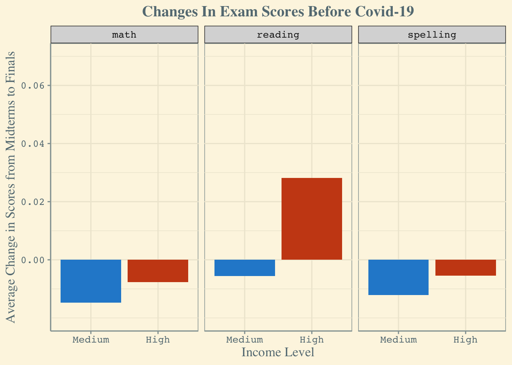
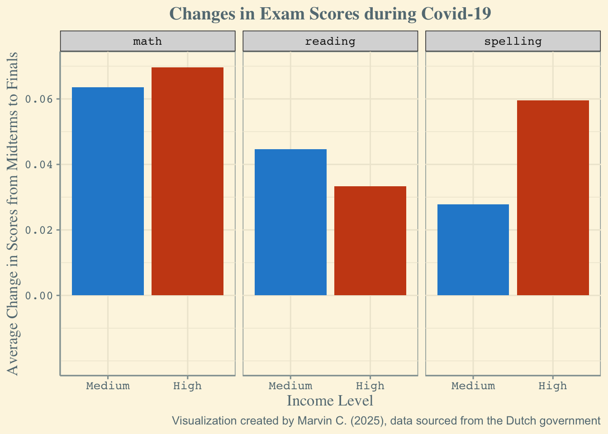

Did COVID Cook Our Kids?
Motivation
We wanted to understand how covid affected the performance of students. We, as students who experienced Covid-19 and the resulting lockdown, wanted to know if it led to worse or better outcomes and whether its effects were influenced by household income and parental education.
Research Question
The goal of the research question is to gage whether or not Covid-19 and the lockdown had a negative, neutral, or positive effect on academic proficiency. It also attempts to gage whether the effects of Covid-19 on academic proficiency, if there are any, is affected by household income or parental education.
So, our research question was: How did academic proficiency decrease in the Netherlands during Covid-19 relative to pre-pandemic levels and how did it vary by the income level of households or their parental education?
Background
Covid-19 is a contagious disease originating from the SARS-CoV-2 Virus. It was first identified in Wuhan, China, and then began to spread internationally. In response to the spread of Covid-19, the Netherlands went through several full lockdowns which closed schools. It first lockdown began in March, 2020. The next was on the 15th of December, 2020. It experienced another in December, 2021.
Covid-19 is also known to cause brain fog, which leads to a trouble concentrating. We also believe that this may have had an effect on students post-pandemic.
For this project we decided to investigate how Covid-19s’ disruption of schools globally impacted children of different socioeconomic backgrounds. We focused on children graded two through five in the Netherlands, using their test scores in Math, Reading, and Spelling to calculate their “Learning gains”.
The data we used comes from an article published in the PLOS one journal. The article describes the impact that 12 weeks of school closures had on children from different socioeconomic backgrounds, taking into account family income, parental education, and migration background, with data going back as far as 2014. We chose to limit our investigation to scores taken in the semester before the pandemic and the scores taken during the period of school closure. We also decided to focus just on Income and Parental education as the most prominent factors impacting student education.
References:
- https://www.who.int/news/item/30-12-2024-milestone-covid-19-five-years-ago
- https://www.containmentnu.nl/articles/timeline?lang=en
- https://www.news-medical.net/health/The-Science-Behind-Long-COVID-Brain-Fog.aspx
Data
Collection / Acquisition: The data we used came from the Nationaal Cohortonderzoek Onderwijs (NCO), which is a database owned by the Dutch government. Its data comes from the Dutch government’s national education registry, which collects data about individual students provided by schools who recieve public funding from the Dutch government. This means that data on students from private schools that do not receive any government funding was not included. The data used from the NCO database was exam scores prior to the pandemic during the pandemic. The data provided from the NCO, however, is generalized to the entire student population based on whether their household incomes were middle or high, whether or not their parental education was high or low, and what grade they were in. The data required for the NCO to categorize each students parents’ parental education was also cross referenced from government data, which contained the degrees they held. The data on students’ household income was calculated by government data about whether or not the household received government benefits and experienced unemployment. Data about students’ proficiency was taken by their exam scores in the categories of reading, spelling, and math. Then, per each grade, the average of all students’ exam scores in each grade and for reading, spelling, and math was provided. The score on the exams that students took was graded from 1-100, so each grade’s average is a percent of the maximum students could have scored.
Findings
Each grade of school had roughly 150k+ students, so we decided that the sample size was large enough. We found that the data set provided needed a lot of cleaning. Many unnecessary variables were included, and they were listed as rows instead of columns. The downloaded csv was not formatted like a csv, and the first row of it needed to be skipped to make the format work. Many variables needed to be renamed, and the dataset needed to be transposed. Lastly, to calculate scores prior to and before covid, new variables needed to be created, and they were standardized as a percent of improvement or decline.
Visualizations
Viz 1: Scores before Covid-19 by Income Level
Viz 2: Scores during Covid-19 by Income Level

Observations (vizualizations 1 & 2)
From our visualizations, we can see that the average difference in exam scores from the midterm to the finals increased by a significant amount across all 3 of the subjects accounted for in the data, comparing pre-Covid to mid-Covid test scores. Interestingly, the visualizations suggests that before the pandemic there was an average decrease in test scores throughout the school year in all subjects for both medium income and low income students, with the one exception being high income students’ reading test scores. Against our intuition, the visualization of score differences during Covid suggests that students across the board scored higher on their finals than on their midterms in each subject regardless of income status.
The indicator of interest here that directly answers our question is the height of the bars relative to one another. That is, we can answer our question by comparing the height difference in the orange and blue bars before and during Covid. The visualizations depict that in nearly every case the high income students perform better on average than, or at least not as bad as, the medium income students, with one notable exception: looking at the reading test score differences during Covid, we see this disparity has reversed itself; the high income students did not have the same level of improvement on their reading test scores as the medium income students. More pertinent, however, is the fact that the gaps between the blue and orange bars diminished as well during Covid. Again, the exception to this is the spelling category; where before there was only a difference in score differences of about 0.006 before Covid, it seems that this gap has grown to about 0.03 points. This represents a 5x increase in the performance gap between high income and low income students, at least when it came to the spelling test. It is important to note that this is in direct contrast with the other subjects accounted for, where the gap either shrunk marginally or flipped completely.
Viz 3: Scores Before Covid-19 By Parent Education Level
Viz 4: Scores During Covid-19 By Parent Education Level
Observations (vizualizations 3 & 4)
These graphs compare the average scores of students before covid 19 and during the school closures caused by the pandemic separated by Parental Education Level. Parental education is split between Medium and High. When comparing the scores from before the students items to during covid, the graphs shows improvements in math but worsened in both reading and spelling. When comparing these scores across time it is most important to look at the differences Parental Education had on the scores of students.
While students are shown to improve in math, students from families of high levels of education showed more improvement than the other students. When looking at the subjects where students struggled, the negative impact of covid has more of an impact on students of medium parental education. When comparing these graphs it is clear that the level of parental education had sever impacts on students during school disruptions, even if their scores were improving, flamiles of higher education saw more improvements and less damage.
Viz 5: Change in Scores by Grade Pre/During Covid in Medium Income Households
Viz 6: Change in Scores by Grade Pre/During Covid in High Income Households
Observations (vizualizations 5 & 6)
The graphs compare the difference in scores of students, standardized by the percent change, pre and post covid by grade and subject. In the graph for medium income households, it becomes clear that all subjects saw a decrease. However, this effect reduced as grade increased. This possible covid effect, therefore, may have a stronger effect on younger students. But, in high income households, there was either a relatively neutral effect. In spelling, there was an improved score in grade 2, reduced scores in grade 3 and 4, and a near 0% difference in grade 5. Reading saw a nearly 0% difference in scores every year. Math saw a similar pattern, except for a uniquely high increase in the 3rd grade with a higher than 20% increase. What is interesting is that the reverse occurred in the 3rd grade for medium income households, indicating that higher incomes cause some sort of reverse effect. Overall, among high income households, there was relatively little change as grade increased, in contrast to the experience of medium income households. This may mean that money cushions high income households from a negative effect that occurred post pandemic, which medium income households could not cushion themselves from.
Limitations and Future Work
The dataset itself is limited, as we only have access to a subset of the data collected during the study referenced above. Our pre-Covid timeframe only includes the 2017-18 school year, whereas the original data scientists had access to a timeline of data, and as such could produce visualizations that much better exemplified trends we were looking for. Also, as mentioned in the introduction, the original study itself only included data from publicly funded schools, meaning this is not representative of private school students, who are presumably in an even higher income bracket. This data could have helped us come to a clearer conclusion.
Even within the data we have, a good portion of the data is labeled as ‘missing’. You may have noticed that the categories we have for both parental education level and income status are only medium and high; this categorization implies a 3rd category: low. However, this was not available within the dataset, and instead there was a large group of students for whom these identifiers were missing. We were forced to exclude these students as these categories were exactly what we were looking at, and adding students that did not belong in either category would’ve confounded our data and obscured any potential observations we could have made.
In terms of future work, an interesting next step would be to look at data for middle schoolers, high schoolers, and public university students if possible. This would give us the ability to look at if age has any significant impact on the relationship we were studying. Extrapolating further, we think it would be useful to also look at data across different countries and see if a country’s GDP and economic status has any impact on this as well, especially in terms of a country’s response to Covid.